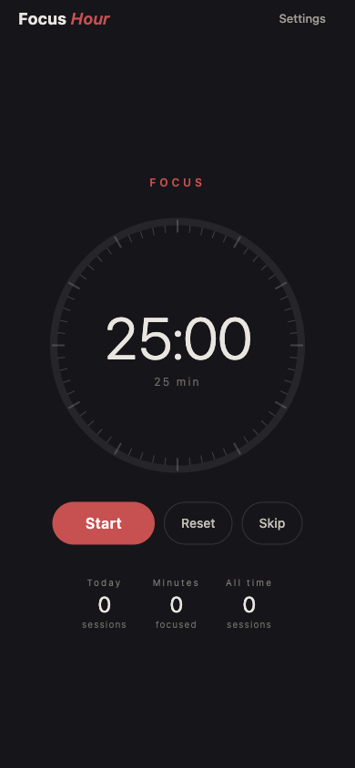
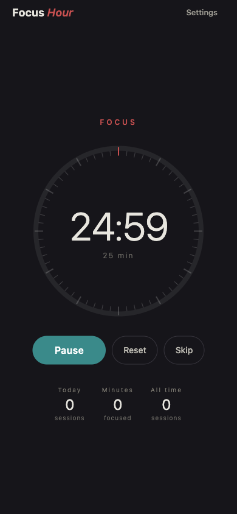

Classic 25 / 5 dial
A circular tick-dial that ramps down through 60 marks. Configurable focus and break lengths (1–120 / 1–60 minutes).
Now in beta · iOS via Expo Go
An ad-free Pomodoro timer for iPhone. A dial that counts down, a local notification when the session ends, today's count next to the dial. That's it.
Offline-firstNo adsNo accountsOpen source
Features
The whole feature set, plainly listed — no upsells gating the basics.
A circular tick-dial that ramps down through 60 marks. Configurable focus and break lengths (1–120 / 1–60 minutes).
Timer is wall-clock under the hood. Lock your phone mid-session and the countdown reconciles on resume — and the end-of-session notification still fires.
Just the numbers you need to feel the streak: sessions today, minutes today, sessions ever. No charts, no calendar grid, no week summary email.
End-of-session alert is scheduled by the OS, not pushed from a server. No APNs round-trip, no push token, no account.
Session ends → next mode cues up automatically. Pause, reset, or Skip to the other mode any time.
No analytics SDK, no third parties. The Privacy Nutrition Label is honestly 'Data Not Collected'.
How to play
A few short steps. The app gets out of your way after that.
The dial begins winding down twenty-five minutes by default. Lock your phone if you want — the end notification still fires.
Pause stops the dial in place. Skip jumps to the other mode (focus → break or break → focus) at your discretion.
When the session completes you get a haptic, a banner notification, and the next mode is queued. Tap Start to begin it.
Tap Settings (top right) to change focus length and break length independently. New values apply to the next session.
Sessions today, minutes today, and all-time sessions live below the dial. They update as you finish focus runs.
Screenshots
Captured from the running app at iPhone 14 viewport.

